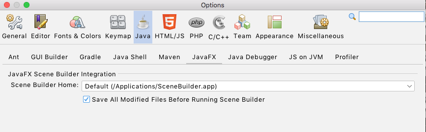

La aplicación Scene Builder permite diseñar, mediante un interfaz gráfico, las estructuras de las ventanas de las aplicaciones que queramos desarrollar usando JavaFX. En este punto veremos los fundamentos básicos para empezar a usar esta herramienta de manera integrada con el entorno de desarrollo NetBeans.
Descarga de Scene Builder: http://gluonhq.com/open-source/scene-builder/

Configurar en NetBeans la localización de SceneBuilder
Con el fin de que cuando se abra un archivo FXML desde NetBeans se muestre directamente con la herramienta Scene Buider, se debe indicar en la configuración de NetBeans en qué carpeta se encuentra Scene Buider.
En el artículo Using Scene Builder with NetBeans IDE de la web de Oracle se puede obtener también información sobre los pasos a seguir.
Scene Builder se encuentra instalada por defecto en la carpeta C:\Users\TU_USUARIO\AppData\Local\SceneBuilder\SceneBuilder.exe, tambien es posible que está en app de tu Mac, eso depende del sistema operativo. Es importante que conoscas su ubicación.
Puedes acceder a las opciones de configuración de NetBeans en el menú Tools > Options. Ahí accede a la sección Java y la pestaña JavaFX:

Selecciona el path de la aplicación SceneBuilder.